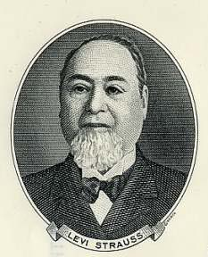

Jeans are trousers often made from denim or dungaree cloth. Often the term "jeans" refers to a particular style of pants, called "blue jeans" and invented by Jacob Davis and Levi Strauss in 1873. Starting in the 1950s, jeans, originally designed for cowboys and miners, became popular among teenagers, especially members of the greaser subculture. Historic brands include Levi's, Lee, and Wrangler. Jeans come in various fits, including skinny, tapered, slim, straight, boot cut, narrow bottom, low waist, anti-fit, and flare. Owing to their high durability as compared to other common fabrics, "distressed" (visibly aged and worn, but still intact and functional) jean trousers have become increasingly fashionable, making pre-sale "factory distressing" a common feature in commercially-sold jeans.
Jeans are now a very popular article of casual dress around the world. They come in many styles and colors. However, blue jeans are particularly identified with American culture, especially the American Old West.
History
Jean Fabric
Research on the trade of jean fabric shows that it emerged in the cities of Genoa, Italy, and Nimes, France. Gênes, the French word for Genoa, may be the origin of the word "jeans". In Nimes, weavers tried to reproduce jean but instead developed a similar twill fabric that became known as denim, from de Nimes, meaning "from Nimes". Genoa’s jean was a fustian textile of “medium quality and of reasonable cost”, very similar to cotton corduroy for which Genoa was famous, and was "used for work clothes in general". Nimes’s “denim” was coarser, considered higher quality and was used "for over garments such as smocks or overalls". Nearly all Indigo, needed for dying, came from indigo bush plantations in India till the late 19th century. It was replaced by indigo synthesis method developed in Germany.
By the 17th century, jean was a crucial textile for working-class people in Northern Italy. This is seen in a series of genre paintings from around the 17th century attributed to an artist now named The Master of the Blue Jeans. The ten paintings depict impoverished scenes with lower-class figures wearing a fabric that looks like denim. The fabric but would have been Genoese jean, which was cheaper. Genre painting came to prominence in late 16th century, and the low-life subject matter in all ten paintings places them among others that portray similar scenes.
Denim is not the only sturdy cotton fabric used for everything from working clothes to fashion items. There is also dungaree. Dungaree was mentioned for the first time in the 17th century, when it was referred to a cheap, coarse thick cotton cloth, often colored blue but sometimes white, worn by impoverished people in what was then a region of Bombay, India a dockside village called Dongri. Hindi name of this cloth was “dungri”. Dungri was exported to England and used for manufacturing of cheap, robust working clothes. English began to call “dungri” cloth a little different and it became “dungaree”.
The importance of jean is also shown by the history of textile trade. Genoese sailors used jean to cover and protect their goods on the docks from the weather. During the Republic of Genoa (17th, 18th centuries), sailors exported jeans throughout Europe.
Jean became popular in the United States when Levi Strauss & Co.’s introduced blue jean overalls in 1873.
Riveted jeans
Levi Strauss as a young man in 1851 emigrated from Germany to New York to join his older brothers who ran a dry goods store. In 1853, he moved to San Francisco to establish his own dry goods business. Jacob Davis was a tailor who often bought bolts of cloth from the Levi Strauss & Co. wholesale house. In 1872, Davis wrote to Strauss asking to partner with him to patent and sell clothing reinforced with rivet. The copper rivets were to reinforce the points of stress, such as pocket corners and at the bottom of the button fly. Levi accepted Davis's offer, and the two men received US patent No. 139,121 for an "Improvement in Fastening Pocket-Openings" on 20 May 1873.
Davis and Strauss experimented with different fabrics. An early attempt was brown cotton duck, a bottom-weight fabric. Finding denim a more suitable material for work-pants, they began using it to manufacture their riveted pants. The denim used was produced by an American manufacturer, but popular legend states it was imported from Nimes, France. A popular myth is that Strauss initially sold brown canvas pants to miners, later dyed them blue, turned to using denim, and only after Davis wrote to him, added rivets.
Manufacturing processes
Dyeing
Traditionally, jeans were dyed to a blue color using natural indigo dye. Most denim is now dyed using synthetic indigo. Approximately 20 thousand tons of indigo are produced annually for this purpose, though only a few grams of the dye are required for each pair. For other colours of denim other dyes must be used. Currently, jeans are produced in any color that can be achieved with cotton.
For more information on dyeing, refer to denim and the discussion there of using pigment dyes.
Pre-shrinking
In 1963 Levi Strauss introduced pre-shrunk jeans, which did not shrink further after purchase, allowing the consumer to buy his or her correct size. These jeans were known as the 505 regular fit jeans. The 505 are almost identical to the 501s with the exception of the button-fly. The Levi's Corporation also introduced a slim boot-cut fit known as 517 and 527. The difference between the two is 517 sit at the waist line and the 527 sit below the waist line. Later, Levi's would develop other styles and fits such as the loose, slim, comfort, relaxed, skinny, and a regular fit with a tapered leg.
Used look
The used or "acid wash" look is created by means of abrading the jeans and/or treating them with chemicals, such as acryl resin, phenol, a hypochlorite, potassium permanganate, caustic soda, acids etc.
Sandblasting or abrading with sandpaper
Consumers wanting jeans that appear worn can buy jeans that have been specially treated. To give the fabrics the worn look, sandblasting done with chemicals or by adding pumice stone to the washing process or abrading with sandpaper is often done.
Enviromental and humanitarian impact
A typical pair of blue jeans consumes 919 gallons of water during its life cycle. This includes the water to irrigate the cotton crop, manufacture the jeans, and the numerous washes by the consumer.
The production of jeans with a "used look" can be more environmentally damaging than regular jeans, depending on how the waste compounds are processed. Sandblasting and treating with sandpaper has the risk of causing silicosis to the workers, and in Turkey, more than 5,000 textile workers have been stricken with this disease, and 46 people are known to have died. Some companies have announced they are banning the use of sandblasting.
Care and wear
Despite most jeans being “pre-shrunk”, they are still sensitive to slight further shrinkage and loss of color from being washed. The Levi Strauss company recommends avoiding washing jeans as much as possible. Carl Chiara, Levi Strauss director of brand and special projects, has a credo: The less you wash your jeans, the better your jeans become. These and other suggestions to avoid washing jeans where possible have encountered criticism. Cory Warren, editor of LS&Co. Unzipped, clarifies in a response to such a criticism:
Our advice is to wash less often, but clearly, you have to judge for yourself what's appropriate. Hot day, dirty job? Wash your jeans. Please! Cold day, office job? Maybe you can wear them twice or more before they go back to the washing machine. Personally, if I wear a pair of jeans to work on Friday—cool climate, office job—I tend to wear them on Saturday. And if Saturday is spent indoors and I'm not spilling food all over myself, I might even wear them on Sunday.
For those who prefer to refrain from washing their jeans there have been suggestions to freeze them in order to kill the germs that cause odor. However, this advice has been disputed as ineffective and replaced with the suggestion of baking them for ten minutes at 250 degrees Fahrenheit.